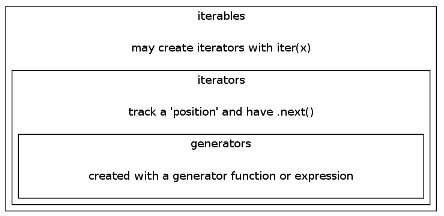

Interview Questions - 2017
We have two sorted lists, and we want to write a function to merge the two lists into one sorted list:
a = [3, 4, 6, 10, 11, 18] b = [1, 5, 7, 12, 13, 19, 21]
Here is our code:
a = [3, 4, 6, 10, 11, 18]
b = [1, 5, 7, 12, 13, 19, 21]
c = []
while a and b:
if a[0] < b[0]:
c.append(a.pop(0))
else:
c.append(b.pop(0))
# either a or b can be not empty
print c + a + b
The output:
[1, 3, 4, 5, 6, 7, 10, 11, 12, 13, 18, 19, 21]
A little bit more compact version using list.extend():
a = [3, 4, 6, 10, 11, 18] b = [1, 5, 7, 12, 13, 19, 21] a.extend(b) c = sorted(a) print c
Note that the list.extend() is different from list.append():
[1, 3, 5, 7, 9, 11, [2, 4, 6]] # a.append(b) [1, 3, 5, 7, 9, 11, 2, 4, 6] # a.extend(b)
We'll see two ways of initializing dictionary by solving word frequency problem.
ss = """I figured it out
I figured it out from black and white
Seconds and hours
Maybe they had to take some time"""
words = ss.split()
d = {}.fromkeys(words,0)
for w in words:
d[w] += 1
print d
We initialized the dictionary with 0 using fromkeys(), and the output should look like this:
{'and': 2, 'some': 1, 'figured': 2, 'from': 1, 'to': 1, 'I': 2, 'Maybe': 1, 'had': 1, 'it': 2, 'hours': 1, 'Seconds': 1, 'black': 1, 'take': 1, 'they': 1, 'time': 1, 'white': 1, 'out': 2}
Here is another way of initializing a dictionary:
d = {}
for w in ss.split():
d[w] = d.get(w,0) + 1
print d
The third way of dictionary initialization using collections.defaultdict(int) which is convenient for counting:
from collections import defaultdict
d = defaultdict(int)
for w in words:
d[w] += 1
print d
Sometimes we may want to construct dictionary whose values are lists.
In the following example, we make a dictionary like {'Country': [cities,...], }:
cities = {'San Francisco': 'US', 'London':'UK',
'Manchester':'UK', 'Paris':'France',
'Los Angeles':'US', 'Seoul':'Korea'}
# => {'US':['San Francisco', 'Los Angeles'], 'UK':[,], ...}
from collections import defaultdict
# using collections.defaultdict()
d1 = defaultdict(list) # initialize dict with list
for k,v in cities.items():
d1[v].append(k)
print d1
# using dict.setdefault(key, default=None)
d2 = {}
for k,v in cities.items():
d2.setdefault(v,[]).append(k)
print d2
Output:
defaultdict(<type 'list'>, {'Korea': ['Seoul'], 'US': ['Los Angeles', 'San Francisco'], 'UK': ['Manchester', 'London'], 'France': ['Paris']})
{'Korea': ['Seoul'], 'US': ['Los Angeles', 'San Francisco'], 'UK': ['Manchester', 'London'], 'France': ['Paris']}
A little bit simpler problem. We have a list of numbers:
L = [1,2,4,8,16,32,64,128,256,512,1024,32768,65536,4294967296]
We want to make a dictionary with the number of digits as the key and list of numbers the value:
{1: [1, 2, 4, 8], 2: [16, 32, 64], 3: [128, 256, 512], 4: [1024], 5: [32768, 65536], 10: [4294967296]})
The code looks like this:
L = [1,2,4,8,16,32,64,128,256,512,1024,32768,65536,4294967296]
from collections import defaultdict
d = defaultdict(list)
for i in L:
d[len(str(i))].append(i)
print d
print {k:v for k,v in d.items()}
OUtput:
defaultdict(<type 'list'>, {1: [1, 2, 4, 8], 2: [16, 32, 64], 3: [128, 256, 512], 4: [1024], 5: [32768, 65536], 10: [4294967296]})
{1: [1, 2, 4, 8], 2: [16, 32, 64], 3: [128, 256, 512], 4: [1024], 5: [32768, 65536], 10: [4294967296]}
Using map, filter, reduce, write a code that create a list of (n)**2 for range(10) for even integers:
l = [x for x in range(10) if x % 2 == 0] print l m = filter(lambda x:x % 2 == 0, [x for x in range(10)] ) print m o = map(lambda x: x**2, m) print o p = reduce(lambda x,y:x+y, o) print p
Output:
[0, 2, 4, 6, 8] [0, 2, 4, 6, 8] [0, 4, 16, 36, 64] 120
Q: We have the following code with unknown function f(). In f(), we do not want to use return, instead, we may want to use generator.
for x in f(5):
print x,
The output looks like this:
0 1 8 27 64
Write a function f() so that we can have the output above.
We may use the following f() to get the same output:
def f(n): return [x**3 for x in range(5)]
But we want to use generator not using return.
So, the answer should look like this:
def f(n):
for x in range(n):
yield x**3
The yield enables a function to comeback where it left off when it is called again. This is the critical difference from a regular function. A regular function cannot comes back where it left off. The yield keyword helps a function to remember its state.
A generator function is a way to create an iterator. A new generator object is created and returned each time we call a generator function. A generator yields the values one at a time, which requires less memory and allows the caller to get started processing the first few values immediately.
Another example of using yield:
Let's build the primes() function so that I fills the n one at a time, and comes back to primes() function until n > 100.
def isPrime(n):
if n == 1:
return False
for t in range(2,n):
if n % t == 0:
return False
return True
for n in primes():
print n,
The print out from the for-loop should look like this:
2 3 5 7 11 ... 83 89 97
Here is the primes() function:
def primes(n=1):
while n < 100:
# yields n instead of returns n
if isPrime(n): yield n
# next call it will increment n by 1
n += 1
Here is a more practical sample of code which I used for Natural Language Processing(NLP).
Suppose we have a huge data file that has hundred millions of lines. So, it may well exceed our computer's memory. In this case, we may want to take so called out-of-core approach: we process data in batch (partially, one by one) rather than process it at once. This saves us from the memory issue when we deal with big data set.
So, we want to use yield command. In the following sample, we do process three lines at a time.
Here is the code:
def stream_docs(path):
with open(path, 'rb') as lines:
for line in lines:
text, label = line[:-3], line[-3:-1]
yield text, label
def get_minibatch(doc_stream, size):
docs, y = [], []
try:
for _ in range(size):
text, label = next(doc_stream)
docs.append(text)
y.append(label)
except StopIteration:
return None, None
return docs, y
doc_stream = stream_docs(path='./test.txt')
for _ in range(100):
X_train, y_train = get_minibatch(doc_stream, size=3)
if not X_train:
break
print 'X_train, y_train=', X_train, y_train
Note that the yield makes the stream_docs() to return a generator which is always an iterator:
If we comment out the "yield" line, we get "TypeError: NoneType object is not an iterator" at the next(doc_stream) in "get_minibatch()" function.
Output from the code:
X_train, y_train= ['line-a', 'line-b', 'line-c'] [' 1', ' 2', ' 3'] X_train, y_train= ['line-d', 'line-e', 'line-f'] [' 4', ' 5', ' 6'] X_train, y_train= ['line-g', 'line-h', 'line-i'] [' 7', ' 8', ' 9'] X_train, y_train= ['line-j ', 'line-k ', 'line-k '] ['10', '11', '12']
The input used in the code looks like this:
line-a 1 line-b 2 line-c 3 line-d 4 line-e 5 line-f 6 line-g 7 line-h 8 line-i 9 line-j 10 line-k 11 line-k 12
The digit at the end of each line is used as a class label(y_train), so we want to keep it separate from the rest of the text(X_train).
For more information about yield or generator, please visit:
It is used to import a module in a directory, which is called package import.
If we have a module, dir1/dir2/mod.py, we put __init__.py in each directories so that we can import the mod like this:
import dir1.dir2.modThe __init__.py is usually an empty py file. The hierarchy gives us a convenient way of organizing the files in a large system.
We may want to use str.join rather than appending a number every time.
>>> ''.join([`x` for x in xrange(101)]) '0123456789101112131415161718192021222324252627282930313233343536373839404142434445464748495051525354555657585960616263646566676869707172737475767778798081828384858687888990919293949596979899100' >>>
Note that the (`) is a backquote not a regiular single quote ('):
>>> type(1) <type 'int'> >>> type(`1`) <type 'str'>
Note that we cannot use double quote(") or single quote(') to make n a string:
>>> type("1")
<type 'str'>
>>> ''.join(["n" for n in range(10)])
'nnnnnnnnnn'
>>> ''.join(['n' for n in range(10)])
'nnnnnnnnnn'
>>> n = 1
>>> print `n`
1
>>> print "n"
n
Note: join() returns a string in which the string elements of sequence have been joined by string separator.
We can use str(x) instead:
>>> ''.join([str(x) for x in range(10)]) '0123456789'
Also, since the xrange() is replaced with range in Python 3.x, we should use range() instead for compatibility.
try:
with open('filename','r') as f:
print f.read()
except IOError:
print "No such file exists"
We need to import os module, and add just one line:
import os
print os.path.expanduser('~')
Output:
/home/k
For example, we have the path like this, /home/k/TEST/PYTHON/p.py:
We can get the dir and file using the following:
First, we need to import os module:
>>> import os
Then, we do:
>>> os.path.dirname('/home/k/TEST/PYTHON/p.py')
'/home/k/TEST/PYTHON'
>>> os.path.basename('/home/k/TEST/PYTHON/p.py')
'p.py'
Or we can get them at once in tuple using os.path.split():
>>> os.path.split('/home/k/TEST/PYTHON/p.py')
('/home/k/TEST/PYTHON', 'p.py')
If we want to combine and make a full path:
>>> os.path.join('/home/k/TEST/PYTHON', 'p.py')
'/home/k/TEST/PYTHON/p.py'
We should be able to answer the questions about the standard library.
Such as "Do you know if there's a standard library for recursive file renaming?",
or "In which library would you use for regular expression?"
- os: operating system support
os.path: Common pathname manipulations:
>>> import os >>> print(os.getcwd()) C:\Python32 >>> cur_dir = os.curdir >>> print(cur_dir) . >>> scripts_dir = os.path.join(os.curdir, 'Tools\Scripts') >>> print(scripts_dir) .\Tools\Scripts >>> diff_py = os.path.join(scripts_dir, 'diff.py') >>> print(diff_py) .\Tools\Scripts\diff.py >>> os.path.basename(diff_py) ' diff.py' >>> os.path.splitext(diff_py) ('.\\Tools\\Scripts\\diff', '.py')The os.path.join() function constructs a pathname out of one or more partial pathnames. In this case, it simply concatenates strings.
Other convenient ones are: dirname() and basename(), which are the 1st and 2nd element of split(), respectively:
>>> import os >>> print(os.getcwd()) C:\TEST\dirA\dirB\dirC >>> print(os.path.dirname(os.getcwd())) C:\TEST\dirA\dirB >>> print(os.path.basename(os.getcwd())) dirC >>> print(os.path.split(os.getcwd())) ('C:\\TEST\\dirA\\dirB', 'dirC') >>> pathname = os.path.join(os.getcwd(),'myfile.py') >>> pathname 'C:\\TEST\\dirA\\dirB\\dirC\\myfile.py' >>> (dirname, filename) = os.path.split(pathname) >>> dirname 'C:\\TEST\\dirA\\dirB\\dirC' >>> filename 'myfile.py'The split function splits a full pathname and returns a tuple containing the path and filename. We could use multi-variable assignment to return multiple values from a function. The os.path.split() function does exactly that. We assign the return value of the split function into a tuple of two variables. Each variable receives the value of the corresponding element of the returned tuple.
The first variable, dirname, receives the value of the first element of the tuple returned from the os.path.split() function, the file path. The second variable, filename, receives the value of the second element of the tuple returned from the os.path.split() function, the filename.
os.path also contains the os.path.splitext() function, which splits a filename and returns a tuple containing the filename and the file extension.
The os.path.expanduser() function :
>>> print(os.path.expanduser('~')) C:\Users\KHongwill expand a pathname that uses ~ to represent the current user's home directory. This works on any platform where users have a home directory, including Linux, Mac OS X, and Windows. The returned path does not have a trailing slash, but the os.path.join() function doesn't mind:
- re: Regular expression operations
Visit Regular Expressions with Python - itertools: Functions creating iterators for efficient looping.
It includes permutations, combinations and other useful iterables.>>> [x for x in itertools.permutations('123')] [('1', '2', '3'), ('1', '3', '2'), ('2', '1', '3'), ('2', '3', '1'), ('3', '1', '2'), ('3', '2', '1')] >>> [x for x in itertools.permutations('123',2)] [('1', '2'), ('1', '3'), ('2', '1'), ('2', '3'), ('3', '1'), ('3', '2')] >>>
>>> sum(range(1,101)) 5050 >>> sum(xrange(1,101)) 5050 >>>
range() returns a list to the sum function containing all the numbers from 1 to 100. But xrange() returns an iterator rather than a list, which makes it more lighter in terms of memory use as shown below.
>>> range(1,5) [1, 2, 3, 4] >>> xrange(1,5) xrange(1, 5) >>>
Note: Since the xrange() is replaced with range in Python 3.x, we should use range() instead for compatibility. The range() in Python 3.x just returns iterator. That means it does not produce the results in memory any more, and if we want to get list from range(), we need to force it to do so: list(range(...)).
Python defines several iterator objects to support iteration over general and specific sequence types, dictionaries.
Any object with a __next__() method to advance to a next result is considered iterator. Note that if an object has __iter__() method, we call the object iterable.
For more info, please visit
http://www.bogotobogo.com/python/python_iterators.php.
Generators allow us to declare a function that behaves like an iterator, i.e. it can be used in a for loop. It's a function type generator, but there is another type of generator that may be more familiar to us - expression type generator used in list comprehension:
>>> # List comprehension makes a list >>> [ x ** 3 for x in range(5)] [0, 1, 8, 27, 64] >>> >>> # Generator expression makes an iterable >>> (x ** 3 for x in range(5)) <generator object <genexpr> at 0x000000000315F678>
With the generator expression, we can just wrap it with list() call:
>>> list(x ** 3 for x in range(5)) [0, 1, 8, 27, 64]
Since every generator is an iterator, we can use next() to get the values:
>>> generator = (x ** 3 for x in range(5)) >>> generator.next() 0 >>> generator.next() 1 >>> generator.next() 8 >>> generator.next() 27
For more information about generators, please visit:
http://www.bogotobogo.com/python/python_generators.php
Functions as first-class objects?
That means we can pass them around as objects and can manipulate them. In other words, most of the times, this just means we can pass these first-class citizens as arguments to functions, or return them from functions. Everything in Python is a proper object. Even things that are "primitive types" in other languages:
>>> dir (100) ['__abs__', '__add__', '__and__', '__class__', '__cmp__', '__coerce__', '__delattr__', '__div__', '__divmod__', '__doc__', '__float__', .... 'numerator', 'real'] >>>
Functions have attributes and can be referenced and assigned to variables.
>>> def one(arg): '''I am a function returning arg I received.''' return arg >>> one(1) 1 >>> one <function one at 0x0284AA70> >>> One = one >>> One <function one at 0x0284AA70> >>> one.__doc__ 'I am a function returning arg I received.' >>>
A docstring is the documentation string for a function. We use it as shown below:
function_name.__doc__
We can declare it like this:
def my_function():
"""our docstring"""
or:
def my_function():
'''our docstring'''
Everything between the triple quotes (with double quotes, """ or with single quotes,''') is the function's docstring, which documents what the function does. A docstring, if it exists, must be the first thing defined in a function. In other words, it should appear on the next line after the function declaration. We don't technically need to give our function a docstring, but we always should. The docstring will be available at runtime as an attribute of the function.
Writing documentation for our program this way makes the code more readable. We can also use comments for clarification of what the code is doing. In general, docstrings are for documentation, comments are for a code reader.
The origin of monkey-patch according to wiki is :
"The term monkey patch seems to have come from an earlier term, guerrilla patch, which referred to changing code sneakily at runtime. The word guerrilla, homophonous with gorilla, became monkey, possibly to make the patch sound less intimidating."
In Python, the term monkey patch only refers to dynamic modifications of a class or module at runtime, motivated by the intent to patch existing third-party code as a workaround to a bug or feature which does not act as we desire.
We have a module called m.py like this:
# m.py
class MyClass:
def f(self):
print "f()"
Then, if we run the monkey-patch testing like this:
>>> import m >>> def monkey_f(self): print "monkey_f()" >>> m.MyClass.f = monkey_f >>> obj = m.MyClass() >>> obj.f() monkey_f() >>>
As we can see, we did make some changes in the behavior of f() in MyClass using the function we defined, monkey_f(), outside of the module m.
It is a risky thing to do, but sometimes we need this trick, such as testing.
The module pdb defines an interactive source code debugger for Python programs. It supports setting (conditional) breakpoints and single stepping at the source line level, inspection of stack frames, source code listing, and evaluation of arbitrary Python code in the context of any stack frame. It also supports post-mortem debugging and can be called under program control.
Python supports the creation of anonymous functions (i.e. functions that are not bound to a name) at runtime, using a construct called lambda. This is not exactly the same as lambda in functional programming languages such as Lisp, but it is a very powerful concept that's well integrated into Python and is often used in conjunction with typical functional concepts like filter(), map() and reduce().
The following code shows the difference between a normal function definition, func and a lambda function, lamb:
>>> >>> def func(x): return x ** 3 >>> print(func(5)) 125 >>> >>> lamb = lambda x: x ** 3 >>> print(lamb(5)) 125 >>>
As we can see, func() and lamb() do exactly the same and can be used in the same ways. Note that the lambda definition does not include a return statement -- it always contains an expression which is returned. Also note that we can put a lambda definition anywhere a function is expected, and we don't have to assign it to a variable at all.
The lambda's general form is :
lambda arg1, arg2, ...argN : expression using arguments
Function objects returned by running lambda expressions work exactly the same as those created and assigned by defs. However, there are a few differences that make lambda useful in specialized roles:
- lambda is an expression, not a statement.
Because of this, a lambda can appear in places a def is not allowed. For example, places like inside a list literal, or a function call's arguments. As an expression, lambda returns a value that can optionally be assigned a name. In contrast, the def statement always assigns the new function to the name in the header, instead of returning is as a result. - lambda's body is a single expression, not a block of statements.
The lambda's body is similar to what we'd put in a def body's return statement. We simply type the result as an expression instead of explicitly returning it. Because it is limited to an expression, a lambda is less general that a def. We can only squeeze design, to limit program nesting. lambda is designed for coding simple functions, and def handles larger tasks.
>>> >>> def f(x, y, z): return x + y + z >>> f(2, 30, 400) 432
We can achieve the same effect with lambda expression by explicitly assigning its result to a name through which we can call the function later:
>>> >>> f = lambda x, y, z: x + y + z >>> f(2, 30, 400) 432 >>>
Here, the function object the lambda expression creates is assigned to f. This is how def works, too. But in def, its assignment is an automatic must.
For more, please go to Functions lambda
We have more detailed discussion in Classes and Instances - Method: Properties.
In general, properties are more flexible than attributes. That's because we can define functions that describe what is supposed to happen when we need setting, getting or deleting them. If we don't need this additional flexibility, we may just use attributes since they are easier to declare and faster.
However, when we convert an attribute into a property, we just define some getter and setter that we attach to it, that will hook the data access. Then, we don't need to rewrite the rest of our code, the way for accessing the data is the same, whatever our attribute is a property or not.
From the official Python documentation on @classmethod:
classmethod(function)
Return a class method for function.
A class method receives the class as implicit first argument,
just like an instance method receives the instance.
To declare a class method, use this idiom:
class C:
@classmethod
def f(cls, arg1, arg2, ...): ...
The @classmethod form is a function decorator.
It can be called either on the class (such as C.f()) or on an instance (such as C().f()).
The instance is ignored except for its class. If a class method is called for a derived class,
the derived class object is passed as the implied first argument.
And for the @staticmethod, the python doc describes it as below:
staticmethod(function)
Return a static method for function.
A static method does not receive an implicit first argument.
To declare a static method, use this idiom:
class C:
@staticmethod
def f(arg1, arg2, ...): ...
The @staticmethod form is a function decorator.
It can be called either on the class (such as C.f()) or on an instance (such as C().f()).
The instance is ignored except for its class.
Static methods in Python are similar to those found in Java or C++.
For more info on static vs class methods, please visit:
@static method vs class method
Iterating the list is not a desirable solution. The right answer should look like this:
>>> dup_list = [1,2,3,4,4,4,5,1,2,7,8,8,10] >>> unique_list = list(set(dup_list)) >>> print unique_list [1, 2, 3, 4, 5, 7, 8, 10] >>>
Python provides the following:
- map(aFunction, aSequence)
- filter(aFunction, aSequence)
- reduce(aFunction, aSequence)
- lambda
- list comprehension
These functions are all convenience features in that they can be written in Python fairly easily. Functional programming is all about expressions. We may say that the Functional programming is an expression oriented programming.
The syntax of map is:
map(aFunction, aSequence)
The first argument is a function to be executed for all the elements of the iterable given as the second argument. If the function given takes in more than 1 arguments, then many iterables are given.
>>> def cubic(x): return x*x*x >>> items = [x for x in range(11) if x % 2 == 0] >>> list(map(cubic, items)) [0, 8, 64, 216, 512, 1000] >>> >>> list(map(lambda x,y: x*y, [1,2,3], [4,5,6])) [4, 10, 18] >>>
map is similar to list comprehension but is more limited because it requires a function instead of an arbitrary expression.
Just for comparison purpose, in the following example, we will include map as well.
>>> integers = [ x for x in range(11)] >>> filter(lambda x: x % 2 == 0, integers) [0, 2, 4, 6, 8, 10] >>> map(lambda x: x**2, integers) [0, 1, 4, 9, 16, 25, 36, 49, 64, 81, 100] >>> reduce(lambda x, y: x + y, integers) 55 >>>
In the above example, we defined a simple list of integer values, then we use the standard functions filter(), map() and reduce() to do various things with that list. All of the three functions expect two arguments: A function and a list.
In the first example, filter() calls our lambda function for each element of the list, and returns a new list that contains only those elements for which the function returned "True". In this case, we get a list of all even numbers.
In the second example, map() is used to convert our list. The given function is called for every element in the original list, and a new list is created which contains the return values from our lambda function. In this case, it computes x^2 for every element.
Finally, reduce() is somewhat special. The function for this one must accept two arguments (x and y), not just one. The function is called with the first two elements from the list, then with the result of that call and the third element, and so on, until all of the list elements have been handled. This means that our function is called n-1 times if the list contains n elements. The return value of the last call is the result of the reduce() construct. In the above example, it simply adds the arguments, so we get the sum of all elements.
Putting *args and/or **kwargs as the last items in our function definition's argument list allows that function to accept an arbitrary number of anonymous and/or keyword arguments.
Those arguments are called Keyword Arguments. Actually, they are place holders for multiple arguments, and they are useful especially when we need to pass a different number of arguments each time we call the function.
We may want to use *args when we're not sure how many arguments might be passed to our function, i.e. it allows us to pass an arbitrary number of arguments to your function as shown in the example below:
>>> def print_all(*args):
for x in enumerate(args):
print x
>>> print_all('A','b','b','a')
(0, 'A')
(1, 'b')
(2, 'b')
(3, 'a')
>>>
The keyword arguments is a special name=value syntax in function calls that specifies passing by name. It is often used to provide configuration options.
>>> def kargs_function(**kargs):
for k,v in kargs.items():
print (k,v)
>>> kargs_function(**{'uno':'one','dos':'two','tres':'three'})
('dos', 'two')
('tres', 'three')
('uno', 'one')
>>>
>>> kargs_function(dos='two', tres='three', uno='one')
('dos', 'two')
('tres', 'three')
('uno', 'one')
>>>
For more details, please visit *args and **kwargs - Collecting and Unpacking Arguments.
The content of objects of immutable types cannot be changed after they are created.
| immutable | mutable |
|---|---|
| tuple, frozen set, int, float, str | list, set, dict, byte array |
To remove a list element, we can use either the del statement if we know exactly which element(s) we are deleting or the remove() method if we do not know.
list.remove(element), del list(index), list.pop(index)
remove() removes the first matching value, not a specific index:
>>> a = [5,6,7,7,8] >>> a.remove(7) >>> a [5, 6, 7, 8]
Both del and pop work on index:
>>> a = [5,6,7,7,8] >>> del a[1] >>> a [5, 7, 7, 8] >>> a = [5,6,7,7,8] >>> a.pop(1) 6 >>> a [5, 7, 7, 8] >>> a = [5,6,7,7,8] >>> a.pop(a.index(6)) # get the index for 6 6 >>> a [5, 7, 7, 8]
Given a list of string, ['Black', 'holes', 'are', 'where', 'God', 'divided', 'by', 'zero'], print each word in a new line:
>>> s = ['Black', 'holes', 'are', 'where', 'God', 'divided', 'by', 'zero'] >>> print '\n'.join(s) Black holes are where God divided by zero
- Python Interview Questions I
- Python Interview Questions II
- Python Interview Questions III
- Python Interview Questions IV
List of codes for interview Q & A
- Merging two sorted list
- Get word frequency - initializing dictionary
- Initializing dictionary with list
- map, filter, and reduce
- Write a function f() - yield
- What is __init__.py?
- Build a string with the numbers from 0 to 100, "0123456789101112..."
- Basic file processing: Printing contents of a file - "with open"
- How can we get home directory using '~' in Python?
- The usage of os.path.dirname() & os.path.basename() - os.path
- Default Libraries
- range vs xrange
- Iterators
- Generators
- Manipulating functions as first-class objects
- docstrings vs comments
- using lambdda
- classmethod vs staticmethod
- Making a list with unique element from a list with duplicate elements
- What is map?
- What is filter and reduce?
- *args and **kwargs
- mutable vs immutable
- Difference between remove, del and pop on lists
- Join with new line
- Hamming distance
- Floor operation on integers
- Fetching every other item in the list
- Python type() - function
- Dictionary Comprehension
- Sum
- Truncating division
- Python 2 vs Python 3
- len(set)
- Print a list of file in a directory
- Count occurrence of a character in a Python string
- Make a prime number list from (1,100)
- Reversing a string - Recursive
- Reversing a string - Iterative
- Output?
- Merging overlapped range
- Conditional expressions (ternary operator)
- Function args
- Unpacking args
- Finding the 1st revision with a bug
- Which one has higher precedence in Python? - NOT, AND , OR
- Decorator(@) - with dollar sign($)
- Multi-line coding
- Recursive binary search
- Iterative binary search
- Pass by reference
- Simple calculator
- iterator class that returns network interfaces
- Converting domain to ip
- How to count the number of instances
- Python profilers - cProfile
- Calling a base class method from a child class that overrides it
- How do we find the current module name?
- Why did changing list 'newL' also change list 'L'?
- Construction dictionary - {key:[]}
- Colon separated sequence
- Converting binary to integer
- 9+99+999+9999+...
- Calculating balance
- Regular expression - findall
- Chickens and pigs
- Highest possible product
- Copy an object
- Filter
- Products
- Pickle
- Overlapped Rectangles
- __dict__
- Fibonacci I - iterative, recursive, and via generator
- Fibonacci II - which method?
- Stack
- Finding duplicate integers from a list - 1
- Finding duplicate integers from a list - 2
- Finding duplicate integers from a list - 3
- Reversing words 1
- Parenthesis, a lot of them
- Palindrome / Permutations
- Constructing new string after removing white spaces
- Removing duplicate list items
- Dictionary exercise
- printing numbers in Z-shape
- Factorial
- lambda
- lambda with map/filter/reduce
- Number of integer pairs whose difference is K
- iterator vs generator
- Recursive printing files in a given directory
- Bubble sort
- What is GIL (Global Interpreter Lock)?
- Word count using collections
- Pig Latin
- List of anagrams from a list of words
- lamda with map, filer and reduce functions
- Write a code sending an email using gmail
- histogram 1 : the frequency of characters
- histogram 2 : the frequency of ip-address
- Creating a dictionary using tuples
- Getting the index from a list
- Looping through two lists side by side
- Dictionary sort with two keys : primary / secondary keys
- Writing a file downloaded from the web
- Sorting csv data
- Reading json file
- Sorting class objects
- Parsing Brackets
- Printing full path
- str() vs repr()
- Missing integer from a sequence
- Polymorphism
- Product of every integer except the integer at that index
- What are accessors, mutators, and @property?
- N-th to last element in a linked list
- Implementing linked list
- Removing duplicate element from a list
- List comprehension
- .py vs .pyc
- Binary Tree
- Print 'c' N-times without a loop
- Quicksort
- Dictionary of list
- Creating r x c matrix
- str.isalpha() & str.isdigit()
- Regular expression
- What is Hashable? Immutable?
- Convert a list to a string
- Convert a list to a dictionary
- List - append vs extend vs concatenate
- Use sorted(list) to keep the original liste
- list.count()
- zip(list,list) - weighted average with two lists
- Intersection of two lists
Python tutorial
Python Home
Introduction
Running Python Programs (os, sys, import)
Modules and IDLE (Import, Reload, exec)
Object Types - Numbers, Strings, and None
Strings - Escape Sequence, Raw String, and Slicing
Strings - Methods
Formatting Strings - expressions and method calls
Files and os.path
Traversing directories recursively
Subprocess Module
Regular Expressions with Python
Object Types - Lists
Object Types - Dictionaries and Tuples
Functions def, *args, **kargs
Functions lambda
Built-in Functions
map, filter, and reduce
Decorators
List Comprehension
Sets (union/intersection) and itertools - Jaccard coefficient and shingling to check plagiarism
Hashing (Hash tables and hashlib)
Dictionary Comprehension with zip
The yield keyword
Generator Functions and Expressions
generator.send() method
Iterators
Classes and Instances (__init__, __call__, etc.)
if__name__ == '__main__'
argparse
Exceptions
@static method vs class method
Private attributes and private methods
bits, bytes, bitstring, and constBitStream
json.dump(s) and json.load(s)
Python Object Serialization - pickle and json
Python Object Serialization - yaml and json
Priority queue and heap queue data structure
Graph data structure
Dijkstra's shortest path algorithm
Prim's spanning tree algorithm
Closure
Functional programming in Python
Remote running a local file using ssh
SQLite 3 - A. Connecting to DB, create/drop table, and insert data into a table
SQLite 3 - B. Selecting, updating and deleting data
MongoDB with PyMongo I - Installing MongoDB ...
Python HTTP Web Services - urllib, httplib2
Web scraping with Selenium for checking domain availability
REST API : Http Requests for Humans with Flask
Blog app with Tornado
Multithreading ...
Python Network Programming I - Basic Server / Client : A Basics
Python Network Programming I - Basic Server / Client : B File Transfer
Python Network Programming II - Chat Server / Client
Python Network Programming III - Echo Server using socketserver network framework
Python Network Programming IV - Asynchronous Request Handling : ThreadingMixIn and ForkingMixIn
Python Interview Questions I
Python Interview Questions II
Python Interview Questions III
Python Interview Questions IV
Python Interview Questions V
Image processing with Python image library Pillow
Python and C++ with SIP
PyDev with Eclipse
Matplotlib
Redis with Python
NumPy array basics A
NumPy Matrix and Linear Algebra
Pandas with NumPy and Matplotlib
Celluar Automata
Batch gradient descent algorithm
Longest Common Substring Algorithm
Python Unit Test - TDD using unittest.TestCase class
Simple tool - Google page ranking by keywords
Google App Hello World
Google App webapp2 and WSGI
Uploading Google App Hello World
Python 2 vs Python 3
virtualenv and virtualenvwrapper
Uploading a big file to AWS S3 using boto module
Scheduled stopping and starting an AWS instance
Cloudera CDH5 - Scheduled stopping and starting services
Removing Cloud Files - Rackspace API with curl and subprocess
Checking if a process is running/hanging and stop/run a scheduled task on Windows
Apache Spark 1.3 with PySpark (Spark Python API) Shell
Apache Spark 1.2 Streaming
bottle 0.12.7 - Fast and simple WSGI-micro framework for small web-applications ...
Flask app with Apache WSGI on Ubuntu14/CentOS7 ...
Fabric - streamlining the use of SSH for application deployment
Ansible Quick Preview - Setting up web servers with Nginx, configure enviroments, and deploy an App
Neural Networks with backpropagation for XOR using one hidden layer
NLP - NLTK (Natural Language Toolkit) ...
RabbitMQ(Message broker server) and Celery(Task queue) ...
OpenCV3 and Matplotlib ...
Simple tool - Concatenating slides using FFmpeg ...
iPython - Signal Processing with NumPy
iPython and Jupyter - Install Jupyter, iPython Notebook, drawing with Matplotlib, and publishing it to Github
iPython and Jupyter Notebook with Embedded D3.js
Downloading YouTube videos using youtube-dl embedded with Python
Machine Learning : scikit-learn ...
Django 1.6/1.8 Web Framework ...
Ph.D. / Golden Gate Ave, San Francisco / Seoul National Univ / Carnegie Mellon / UC Berkeley / DevOps / Deep Learning / Visualization